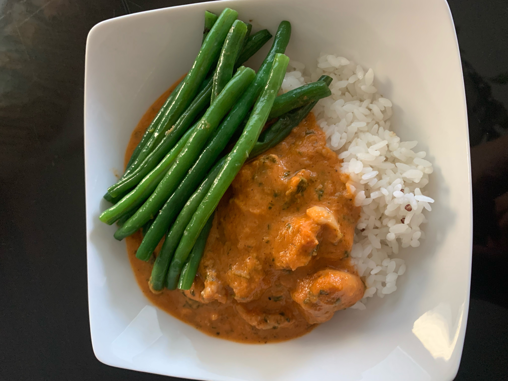
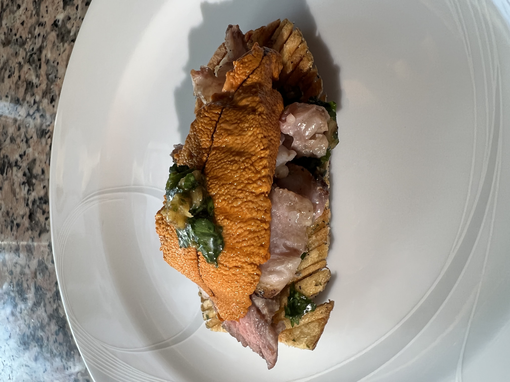

Food
Growing up, my family has always been centered around food and meals. My dad taught me how to cook from age 11, starting with a very simple chicken fried rice. Since then, I've worked at two restaurants, ranging from running food, prep, and grilling chicken on the hot line. While it's been a year since my previous kitchen job, I still regularly cook for myself and friends.

This is a chicken tikka masala i made for my family. As a taiwanese family, we only ever ate japanese style curry growing up, so I made everyone try this to give them a different experience with curry. This was one of my first experiences learning a recipe by myself, so when it turned out the way it did, I was very, VERY pleased with myself.

This one's a kimchi & spare rib grilled cheese I came up with when I was hungry at 3 in the morning. While the ingredients may sound kinda weird at first, it actually turned out really tasty. The spare ribs I used were slow braised in soy sauce for several hours, so after cooking for that long, they were easily pulled apart and mixed perfectly with the fried kimchi and cheese.

This last dish is probably my finest culinary achivement. I came up with this little hors d'oeurve for Mother's day this year. Originally, I wanted to do a steak and uni rice bowl for the family, but after realising how boring that could be, I decided I wanted to do something a bit fancier. In the end, I went with tik tok's accordion fries as a base, topped with a layer of roast garlic chimmichurri and some medium well ribeye. Finally, the whole bite is topped off with a piece of uni and garnished with some more chimmichuri.